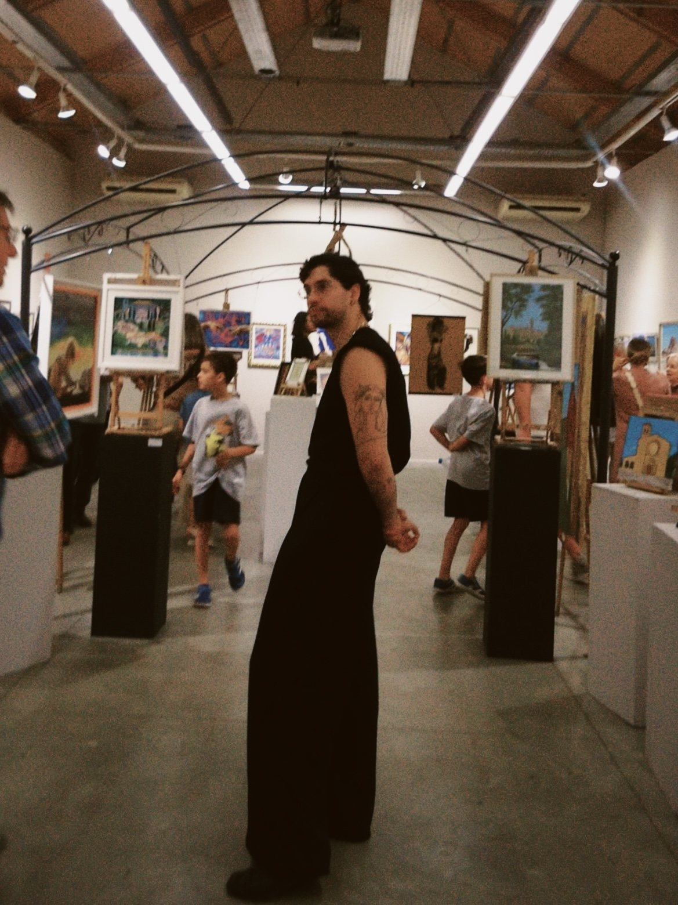

Trayectoria
Javier Sanagustín Moreu
Nace en Huesca en 1995. Crece en la «Escuela de Dibujo y Pintura Sanagustín», fundada por sus padres, y empieza a enseñar allí a los 16 años. Dirige la escuela desde 2019.
Su formación es ajena a la academia. Su pintura se forma en el aula, dando clase, mirando trabajar a sus alumnos y a los pintores que ellos mismos le señalan.
Su obra evoluciona del realismo hacia un lenguaje gestual, donde la mancha y el agua sostienen la emoción de cada cuadro.
«Reflejos y sombras» es su primera exposición individual.
Texto de artista
Esta exposición nace de una experiencia en el Museo del Prado. Escuché a un niño decirle a su padre, «Papá, vamos a ver a Goya». Lo sentí como quien quiere ver a alguien cercano. Alguien que está aquí.
Y ya lo había vivido antes. Algo en esos pintores tiraba hacia mí sin que supiera por qué. Ahora sé que no era aprendizaje. Era reconocimiento. Algo en ellos ya estaba en mí antes de encontrarlos.
Por eso pinto con ellos. No desde la distancia del que estudia, sino desde el que pinta con gesto fluido, manchado y emocional. No pretendo hacer versiones ni homenajes. Son el registro de lo que ocurrió cuando esa obra pasó por mí.
El dolor, la risa, la tristeza. Nunca sabremos si tus lágrimas saben a las mías. Solo puedo notar la fuerza de tus manos, escuchar el llanto de tu silencio.
Por eso pinto. No para que sientas lo que yo siento. Para que encuentres lo que ya llevabas dentro, y reflejes tus sentimientos a través de un lenguaje que solo te pertenece.
Te busqué sin saberlo. Y me encontré.
Yo pongo el mío. Tú pones el tuyo. Y en ese cruce, ocurre algo que ninguno podría haber creado solo. Lo que verás no soy yo, ni eres tú.
Es mi sombra en el reflejo de tus sentimientos.
Exposiciones individuales
- 2026
- Reflejos y sombras. Palacio de Villahermosa, Fundación Ibercaja, Huesca. 8 de octubre – 11 de noviembre.
Comisariado y exposiciones colectivas
- 2021–2026
- Comisario y participante con obra de gran formato en la exposición colectiva anual de la Escuela de Dibujo y Pintura Sanagustín. Casino de Huesca y Centro Cultural Manuel Benito Moliner, Huesca.
- 2026
- Exposición de Pintores del Casco Antiguo, Claustros de San Pedro, Huesca.
- 2017
- Exposición junto a David Simonyan, Casa de Juventud, Ayuntamiento de Zaragoza.
Encargos institucionales y públicos
- 2026
- Obra encargada como portada del programa de fiestas, Casco Antiguo de Huesca.
- 2019
- Portada del Diario del Alto Aragón, 10 de agosto, junto a Fernando Sanagustín, con ATADES (hoy Valentía).
- 2019
- Paseo de los Cuidadores, Hospital San Jorge de Huesca, junto a Fernando Sanagustín, con ATADES y Tecmolde.
- 2017
- Taller y pintura mural, junto a Fernando Sanagustín, CEIP Las Pajaritas de Huesca.
Encargos comerciales
- 2025
- Portada del disco We the North.
- 2020
- Folleto institucional para la Asociación Violeta, contra la violencia de género, Día de la Mujer, Barcelona.
Docencia
- Desde 2011
- Colabora dando clases junto a Fernando Sanagustín en la Escuela de Dibujo y Pintura Sanagustín.
- Desde 2019
- Director de la Escuela de Dibujo y Pintura Sanagustín, Huesca.
Formación
- Formación ajena a la academia, desarrollada en el aula de la Escuela de Dibujo y Pintura Sanagustín.

